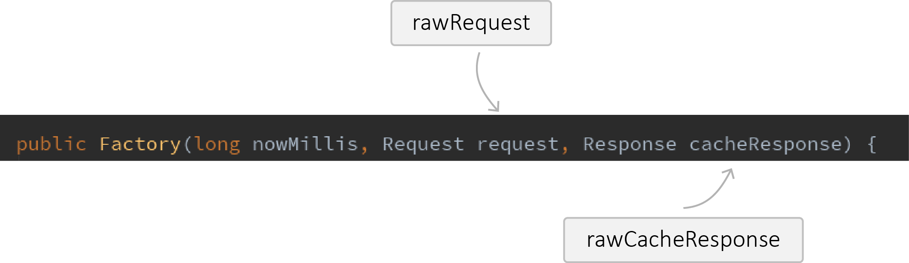

这篇文章详述了CacheStrategy的功能，此类大部分的逻辑可参考RFC7234和RFC2616的缓存部分，也就是说此类是对于协议标准的实现，不涉及文件操作等底层细节
CacheStrategy负责判断已缓存的响应能否继续被新的请求使用，并生成新的请求和响应，CacheStrategy中只有两个域，networkRequest和cacheResponse。networkRequest表示如果缓存不可用，我们需要向服务器发送的新的请求，cacheResponse表示可用的缓存。而这包含这两个值的CacheStrategy是通过一个工厂来生成的，这个工厂就是CacheStrategy中最主要的逻辑了。这个工厂需要三个参数来生成CacheStrategy，分别是nowMillis也就是当前的时刻、request初始请求、cacheResponse初始请求对应的缓存的响应。由于这三个参数中的后两个参数与CacheStrategy中的两个域可能产生歧义，我们不妨将输入参数中的request和cacheResponse称为rawRequest和rawCacheResponse。rawRequest和rawCacheResponse与CacheStrategy中的networkRequest和cacheResponse不一定就是相同的请求和响应，因为我需要向网络发送的请求最终可能是个条件请求，在缓存的响应中需要按照RFC7234的要求添加一些额外的首部。

networkRequest和cacheResponse的组合就决定了缓存的响应是否可用，组合对缓存响应的可用性可用下表表示：
| networkRequest | cacheResponse | 缓存可用性 |
|---|---|---|
| null | null | 缓存不可用，也不能进行网络请求 |
| null | cacheResponse | 缓存可用，需要添加额外首部 |
| networkRequest | null | 缓存不可用，此时的networkRequest和rawRequest一致 |
| networkRequest | cacheResponse | 缓存可用，但是需要重新验证，此时networkRequest是一条条件请求，cacheResponse和rawCacheResponse一致 |
CacheInterceptor.java
2
3
4
5
6
7
? cache.get(chain.request())
: null;
long now = System.currentTimeMillis();
CacheStrategy strategy = new CacheStrategy.Factory(now, chain.request(), cacheCandidate).get();
上方代码片段是CacheInterceptor中的代码，表示从缓存中取出候选响应，且生成CacheStrategy的过程。
CacheStrategy.java
2
3
4
5
6
7
8
9
10
11
12
13
14
15
16
17
18
19
20
21
22
23
24
25
26
27
28
29
30
public Factory(long nowMillis, Request request, Response cacheResponse) {
this.nowMillis = nowMillis;
this.request = request;
this.cacheResponse = cacheResponse;
if (cacheResponse != null) {
this.sentRequestMillis = cacheResponse.sentRequestAtMillis();
this.receivedResponseMillis = cacheResponse.receivedResponseAtMillis();
Headers headers = cacheResponse.headers();
for (int i = 0, size = headers.size(); i < size; i++) {
String fieldName = headers.name(i);
String value = headers.value(i);
if ("Date".equalsIgnoreCase(fieldName)) {
servedDate = HttpDate.parse(value);
servedDateString = value;
} else if ("Expires".equalsIgnoreCase(fieldName)) {
expires = HttpDate.parse(value);
} else if ("Last-Modified".equalsIgnoreCase(fieldName)) {
lastModified = HttpDate.parse(value);
lastModifiedString = value;
} else if ("ETag".equalsIgnoreCase(fieldName)) {
etag = value;
} else if ("Age".equalsIgnoreCase(fieldName)) {
ageSeconds = HttpHeaders.parseSeconds(value, -1);
}
}
}
}
可以看到构造器中记录了一些时间参数和条件请求首部，方便后续对rawCacheResponse是否需要添加信息性首部以及rawRequest是否要添加条件请求首部进行判断。
CacheStrategy.java
2
3
4
5
6
7
8
9
10
CacheStrategy candidate = getCandidate();
if (candidate.networkRequest != null && request.cacheControl().onlyIfCached()) {
// We're forbidden from using the network and the cache is insufficient.
return new CacheStrategy(null, null);
}
return candidate;
}
上方是CacheStrategy.Factory的get()方法，可以看到，这个方法受限获取一个候选的CacheStrategy，然后根据我们是否仍然需要去联网获取响应但是请求中的缓存控制指令（Cache-Control directive）是否只指定只能使用缓存中的响应（关于缓存控制指令可参考https://tools.ietf.org/html/rfc7234#section-5.2），那么只能返回networkRequest和cacheResponse都为null的CacheStrategy了，表示不需要进一步联网，缓存中没有可用的响应。那么getCandidate()又做了什么操作呢？
CacheStrategy.java
2
3
4
5
6
7
8
9
10
11
12
13
14
15
16
17
18
19
20
21
22
23
24
25
26
27
28
29
30
31
32
33
34
35
36
37
38
39
40
41
42
43
44
45
46
47
48
49
50
51
52
53
54
55
56
57
58
59
60
61
62
63
64
65
66
67
68
69
70
71
72
73
74
75
76
77
78
// No cached response.
if (cacheResponse == null) {
return new CacheStrategy(request, null);
}
// Drop the cached response if it's missing a required handshake.
if (request.isHttps() && cacheResponse.handshake() == null) {
return new CacheStrategy(request, null);
}
// If this response shouldn't have been stored, it should never be used
// as a response source. This check should be redundant as long as the
// persistence store is well-behaved and the rules are constant.
if (!isCacheable(cacheResponse, request)) {
return new CacheStrategy(request, null);
}
CacheControl requestCaching = request.cacheControl();
if (requestCaching.noCache() || hasConditions(request)) {
return new CacheStrategy(request, null);
}
long ageMillis = cacheResponseAge();
long freshMillis = computeFreshnessLifetime();
if (requestCaching.maxAgeSeconds() != -1) {
freshMillis = Math.min(freshMillis, SECONDS.toMillis(requestCaching.maxAgeSeconds()));
}
long minFreshMillis = 0;
if (requestCaching.minFreshSeconds() != -1) {
minFreshMillis = SECONDS.toMillis(requestCaching.minFreshSeconds());
}
long maxStaleMillis = 0;
CacheControl responseCaching = cacheResponse.cacheControl();
if (!responseCaching.mustRevalidate() && requestCaching.maxStaleSeconds() != -1) {
maxStaleMillis = SECONDS.toMillis(requestCaching.maxStaleSeconds());
}
if (!responseCaching.noCache() && ageMillis + minFreshMillis < freshMillis + maxStaleMillis) {
Response.Builder builder = cacheResponse.newBuilder();
if (ageMillis + minFreshMillis >= freshMillis) {
builder.addHeader("Warning", "110 HttpURLConnection \"Response is stale\"");
}
long oneDayMillis = 24 * 60 * 60 * 1000L;
if (ageMillis > oneDayMillis && isFreshnessLifetimeHeuristic()) {
builder.addHeader("Warning", "113 HttpURLConnection \"Heuristic expiration\"");
}
return new CacheStrategy(null, builder.build());
}
// Find a condition to add to the request. If the condition is satisfied, the response body
// will not be transmitted.
String conditionName;
String conditionValue;
if (etag != null) {
conditionName = "If-None-Match";
conditionValue = etag;
} else if (lastModified != null) {
conditionName = "If-Modified-Since";
conditionValue = lastModifiedString;
} else if (servedDate != null) {
conditionName = "If-Modified-Since";
conditionValue = servedDateString;
} else {
return new CacheStrategy(request, null); // No condition! Make a regular request.
}
Headers.Builder conditionalRequestHeaders = request.headers().newBuilder();
Internal.instance.addLenient(conditionalRequestHeaders, conditionName, conditionValue);
Request conditionalRequest = request.newBuilder()
.headers(conditionalRequestHeaders.build())
.build();
return new CacheStrategy(conditionalRequest, cacheResponse);
}
上方代码可以分为三部分，第一部分是缓存的响应完全不可用，第二部分时缓存的响应可用，第三部分是缓存的响应需要进一步验证才可以使用。
第一部分的代码区域为：
CacheStrategy.java
2
3
4
5
6
7
8
9
10
11
12
13
14
15
16
17
18
19
20
21
if (cacheResponse == null) {
return new CacheStrategy(request, null);
}
// Drop the cached response if it's missing a required handshake.
if (request.isHttps() && cacheResponse.handshake() == null) {
return new CacheStrategy(request, null);
}
// If this response shouldn't have been stored, it should never be used
// as a response source. This check should be redundant as long as the
// persistence store is well-behaved and the rules are constant.
if (!isCacheable(cacheResponse, request)) {
return new CacheStrategy(request, null);
}
CacheControl requestCaching = request.cacheControl();
if (requestCaching.noCache() || hasConditions(request)) {
return new CacheStrategy(request, null);
}
这一部分代码中，CacheStrategy中的cacheResponse均为null，前两个if条件判断是很容易理解的，第一个OkHttp中本身就没有缓存的响应，第二个请求是安全连接但rawCacheResponse 中没有握手信息，也就是说rawCacheResponse 是在非安全连接下缓存的，这两种条件中的rawCacheResponse均视为不可用。第三个if条件判断通过rawCacheResponse中的响应码和首部以及缓存控制指令和rawRequest中的缓存控制指令判断rawCacheResponse是否可用。
CacheStrategy.java
2
3
4
5
6
7
8
9
10
11
12
13
14
15
16
17
18
19
20
21
22
23
24
25
26
27
28
29
30
31
32
33
34
35
36
37
38
39
40
public static boolean isCacheable(Response response, Request request) {
// Always go to network for uncacheable response codes (RFC 7231 section 6.1),
// This implementation doesn't support caching partial content.
switch (response.code()) {
case HTTP_OK:
case HTTP_NOT_AUTHORITATIVE:
case HTTP_NO_CONTENT:
case HTTP_MULT_CHOICE:
case HTTP_MOVED_PERM:
case HTTP_NOT_FOUND:
case HTTP_BAD_METHOD:
case HTTP_GONE:
case HTTP_REQ_TOO_LONG:
case HTTP_NOT_IMPLEMENTED:
case StatusLine.HTTP_PERM_REDIRECT:
// These codes can be cached unless headers forbid it.
break;
case HTTP_MOVED_TEMP:
case StatusLine.HTTP_TEMP_REDIRECT:
// These codes can only be cached with the right response headers.
// http://tools.ietf.org/html/rfc7234#section-3
// s-maxage is not checked because OkHttp is a private cache that should ignore s-maxage.
if (response.header("Expires") != null
|| response.cacheControl().maxAgeSeconds() != -1
|| response.cacheControl().isPublic()
|| response.cacheControl().isPrivate()) {
break;
}
// Fall-through.
default:
// All other codes cannot be cached.
return false;
}
// A 'no-store' directive on request or response prevents the response from being cached.
return !response.cacheControl().noStore() && !request.cacheControl().noStore();
}
OkHttp中对于响应码是200、203、204、300、301、404、405、410、414、501、308可直接进入下一步的判断。对于响应码是302、307的还需要判断rawCacheResponse中是否包含Expires首部或缓存控制指令中是否设置了maxAge或缓存控制指令中指定rawCacheResponse是公有的或是私有的，上述条件满足其一即可进入下一步的判断。我们上述所说的下一步的判断是指rawCacheResponse和rawRequest的缓存控制指令中均未包含no-store指令（这个指令表示接收到的响应希望自己不被缓存或者请求方希望请求到的响应不被缓存）。如果上述条件都满足的话，表明rawCacheResponse是可被缓存的，这个方法在CacheInterceptor中也被用到了。这个方法用在此处或许是冗余的，因为一条响应如果不能被缓存应该在最初使用rawRequest从缓存中获取都获取不到，OkHttp源码中也是如是说的。
关于上述OkHttp中判断响应是否可被缓存还有几个需要注意的地方：第一个对于响应码的判断。RFC中支持缓存的响应码为 200、203、204、206、300、301、404、405、410、414和501（此处可参见https://tools.ietf.org/html/rfc7231#section-6.1第二段）和308（此处可参见https://tools.ietf.org/html/rfc7238#section-3），OkHttp中比RFC中少判断了206（Partial Content）这一点在源码中的注释也有表明，初步估计是因为Partial Content在缓存中的合并是费力不讨好的工作，所以OkHttp不支持，如另有原因，希望指出。
未完待续